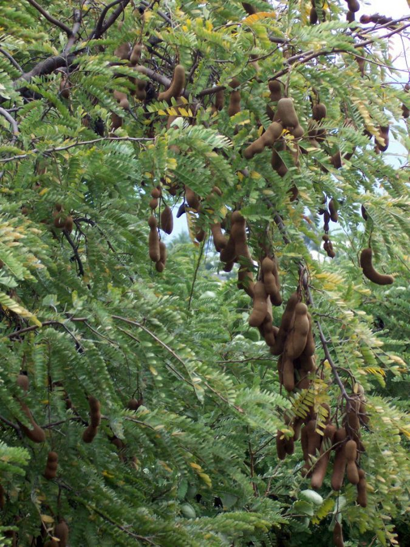

इमलीTamarind
Tamarindus indica · Fabaceae · FLR-0043

- Scientific name
- Tamarindus indica L.
- Family
- Fabaceae
- Hindi
- इमली
- Status here
- naturalized
- IUCN
- LC
When to look कब देखें
Present all year.
इमली / Tamarind
Tamarindus indica L. — Fabaceae
इमली — उत्तर प्रदेश के गांवों, सड़कों के किनारे और मंदिर परिसरों में पाया जाने वाला एक विशाल, धीमी गति से बढ़ने वाला और दीर्घजीवी (long-lived) पेड़ है। यह मूल रूप से उष्णकटिबंधीय अफ्रीका का निवासी है, लेकिन प्राचीन काल में इसे भारत लाया गया और अब यह पूरी तरह से देश में स्थापित (naturalized) हो चुका है। इसका घना और फैला हुआ मुकुट (canopy) साल भर घनी छाया प्रदान करता है। इसके पत्ते छोटे और पिन्नेट (compound leaves) होते हैं। गर्मी के मौसम (मई-जुलाई) में इसमें छोटे, पीले-लाल रंग के फूल आते हैं, जो सर्दियों तक भूरे, सख्त खोल वाली फलियों (pods) में बदल जाते हैं। इन फलियों के भीतर खट्टा-मीठा, चिपचिपा गूदा होता है, जिसका उपयोग दाल, चटनी और अन्य व्यंजनों में खटास लाने के लिए किया जाता है। ग्रामीण इलाकों में पुराने इमली के पेड़ अक्सर प्राचीन बस्तियों के ऐतिहासिक स्थलों को दर्शाते हैं।
Quick Identification त्वरित पहचान
| Feature | Description |
|---|---|
| Form | Large tree (15–25 m) with a massive, spreading, rounded crown; trunk is short and very thick |
| Leaves | Pinnate compound leaves (5–15 cm long) with 10–18 pairs of small, oblong, opposite leaflets; semi-evergreen |
| Flowers | Small (1.5–2.5 cm), pale yellow with reddish-pink veins, arranged in loose terminal clusters |
| Fruit | Curved, indehiscent, cinnamon-brown, woody pod (8–15 cm long) with a brittle shell containing acid pulp |
| Seeds | Hard, shiny, dark brown or black, squarish seeds (3–10 per pod) embedded in the pulp |
| Bark | Dark greyish-brown, rough, cracking vertically into thick rectangular plates |
Field tip: Any massive, spreading shade tree in a village common with tiny, fern-like pinnate leaves and curved, brown, brittle-shelled pods hanging in winter is a Tamarind tree.
Morphology आकारिकी
Biometrics (typical measurements for mature specimens in plains of eastern UP):
| Feature | Measurement |
|---|---|
| Tree height | 15–25 m |
| Leaf length | 5–15 cm |
| Leaflet length | 1.2–2.5 cm; Width: 4–8 mm |
| Flower diameter | 1.5–2.5 cm |
| Pod dimensions | 8–15 cm length; 1.5–2.5 cm width |
Canopy: Extremely dense, providing high-quality shade. The branches are drooping, and the twigs are hairy when young.
Leaves: The compound leaves have a clean, fern-like appearance. The leaflets are asymmetrical at the base, smooth-edged, and close up slightly in response to darkness or touch.
Fruit pulp: The pulp is green and highly acidic when young, turning sticky, reddish-brown, and sour-sweet as it ripens. The pulp is held together by a network of tough fibers.
Associated Species / Interactions सहजीवी संबंध
Canopy anchor.
- Shelter: The wide, dense canopy provides nesting and roosting space for large birds like Crows (
[BRD-0027],[BRD-0028]), Pigeons ([BRD-0024]), and Langurs. - Frugivores: The ripe pods are eaten by monkeys, civets (
[MAM-0012 Small Indian Civet]), and parakeets, which bite open the outer shell. - Insect nectar: The flowers are visited by honey bees (
[INS-0038]relative) and butterflies during the hot dry months when other nectar sources are scarce.
Life Cycle / Phenology जीवन चक्र
- Leaf renewal: Semi-evergreen, but sheds some leaves briefly in early summer (April–May) before immediately flushing with new bright green foliage.
- Flowering: Small yellow-red flowers bloom from May to July.
- Fruit growth: Pods grow rapidly during the monsoon (July–September), remaining green and acidic.
- Ripening: The pulp dries and sweetens, and the outer shell becomes brittle between January and April.
Pests and Diseases कीट और रोग
- Tamarind Weevil: The weevil (Sitophilus linearis) lays eggs inside the ripening pods, the larvae consuming the seeds.
- Powdery Mildew: Attacks young nursery seedlings during wet seasons, causing leaf drop.
- Leaf-cutting Ants: Can defoliate young saplings in homesteads.
Agricultural / Human Relevance कृषि प्रासंगिकता
Kitchen spice and shade timber.
- Culinary value: The acidic pulp is a staple culinary ingredient across UP. It is used as a souring agent in sambhar, curries, and local chutneys. The seeds are ground into starch powder for textile sizing.
- Durable timber: The wood is extremely hard, heavy, and resistant to insects. It is used to manufacture wooden mortars and pestles (okhli-musal), heavy-duty cartwheels, and agricultural tools.
- Traditional Settlement Marker: Because tamarind trees live for 150–200+ years, old trees in Basti district often mark the locations of abandoned ancestral villages or historic temple sites.
Traditional and Ethnobotanical Use
- Digestive aid: The acidic pulp is consumed as a natural digestive tonic and laxative to treat stomach disorders.
- Fever compress: A wash prepared from leaves or diluted pulp is applied as a cold forehead compress to reduce high body temperature during fevers.
- Antidote for heat: Diluted tamarind water mixed with sugar is drunk to prevent sunstroke during the summer heatwaves (loo).
- Wound wash: A decoction of the leaves is used as an antiseptic wash for healing chronic wounds and skin ulcers.
- Seed paste: The powder of dried seeds mixed with water is applied as a paste to treat scorpion stings and insect bites.
Expected Locally स्थानीय रूप से अपेक्षित
Not a field record. Written from published accounts for eastern Uttar Pradesh. No confirmed local sighting yet — if you have seen it, that is what the atlas needs.
अभी तक स्थानीय पुष्टि नहीं। यह विवरण प्रकाशित स्रोतों से है, किसी अवलोकन से नहीं।
Commonly found in the public spaces (panchayat land) and roadsides of Harraiya and Vikramjot blocks in Basti district. Many massive, ancient trees exist near village ponds. During late winter (February–March), women and children collect the fallen ripe pods to extract the pulp for storage.
Distribution वितरण
Global range: Native to tropical Africa. It was introduced to India in ancient times (likely through early trade routes) and is now cultivated and naturalized throughout tropical regions of Asia, the Pacific, and South America.
In India: Widespread in all plains and dry deciduous zones, particularly common in southern and central states.
In Uttar Pradesh: Present in all districts as a common avenue and village tree.
In Basti district / eastern UP: Highly common resident; found in village commons and field margins.
Research Questions शोध प्रश्न
- What is the age profile of mature Tamarindus indica trees in Basti district, and are young seedlings regenerating naturally in village commons? / बस्ती जिले में पुराने इमली के पेड़ों की औसत आयु क्या है, और क्या पंचायत भूमि पर इसके नए पौधे प्राकृतिक रूप से उग रहे हैं?
- How does the presence of a mature Tamarindus indica canopy affect the micro-climate and soil temperature beneath it during summer? / गर्मी के मौसम में इमली के पेड़ की घनी छाया से उसके नीचे की मिट्टी के तापमान और नमी पर क्या प्रभाव पड़ता है?
- Does the high acid content of fallen Tamarindus indica leaves inhibit the growth of surrounding weed species (allelopathy)?
- What is the primary insect pollinator species responsible for Tamarindus indica fruit set in local orchards?
- Can children collect tamarind seeds and test how long they take to germinate when soaked in water versus dry soil? — An easy, educational seed-germination experiment.
Similar Species मिलती-जुलती प्रजातियाँ
| Species | Key Difference | हिंदी |
|---|---|---|
| Monechma / Acacia spp. (Babool trees) | Have sharp spines on branches; yellow powder-puff flowers; pods are thin and dry (not woody/fleshy); leaves are bipinnate. | बबूल — कांटेदार शाखाएं, पीला फूल |
Albizia lebbeck (Siris [FLR-0048]) | Leaves are much larger; pods are large, flat, papery, and straw-coloured (rattle in the wind); lacks the sour pulp. | शिरीष — बड़े पत्ते, चपटी सूखी फलियां |
| Pithecellobium dulce (Jungle Jalebi) | Leaves have only a single pair of leaflets; pods are highly coiled, red when ripe, containing sweet white pulp; branches are thorny. | जंगल जलेबी — दो पत्ती संरचना, मुड़ी फलियां |
Taxonomy & Classification वर्गीकरण
Original description. Carl Linnaeus described the Tamarind as Tamarindus indica in 1753 in Species Plantarum (Vol. 1, p. 34). The type locality was India. The genus name Tamarindus is derived from the Arabic tamar hind (تمر هندي), meaning "date of India," referring to the brown sticky pulp. The specific name indica means "of India."
Subspecies. Monotypic — no subspecies are currently recognised.
Family and order placement. Placed in the order Fabales, family Fabaceae (legume family), subfamily Detarioideae.
Phylogenetic notes. Tamarindus indica is the sole species in the monotypic genus Tamarindus. Molecular phylogenetics places it within the tribe Detarieae, a lineage of tropical legumes that diverged early from the main pea ancestor group.
IUCN status rationale. Listed as Least Concern (LC) by the IUCN Red List due to its extremely wide global distribution, high abundance, and extensive cultivation in agricultural and urban landscapes. It faces no major conservation threats.
Photo Gallery फोटो गैलरी
References संदर्भ
- Linnaeus, C. (1753). Species Plantarum. Laurentii Salvii, Holmiae, Vol. 1, p. 34. [original description]
- Brandis, D. (1906). Indian Trees. Archibald Constable & Co., London.
- Hooker, J. D. (1878). The Flora of British India. Vol. 2. L. Reeve & Co., London.
- Morton, J. F. (1987). Tamarind. In: Fruits of warm climates. Julia F. Morton, Miami, FL, pp. 115–121.
- Botanical Survey of India. State Flora Series: Flora of Uttar Pradesh. BSI, Kolkata.
- IUCN SSC Global Tree Specialist Group (2021). Tamarindus indica. The IUCN Red List of Threatened Species. IUCN, Gland, Switzerland.
- GBIF Occurrence Data — Tamarindus indica, South Asia (2026). GBIF taxon key: 2975768.
Source file: species/flora/trees/tamarind.md